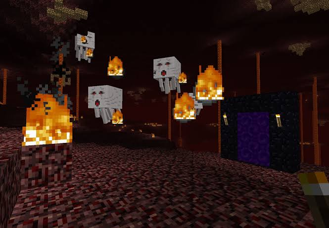
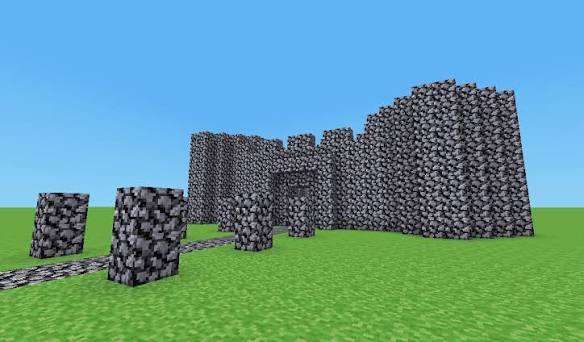

Minecraft создал шведский программист Маркус Перссон (Markus Persson), известный под ником Notch (Нотч).
Первая рабочая версия игры была написана им всего за шесть дней в мае 2009 года.
🎃 Первое самое масштабное обновление: Halloween Update (2010)
Хотя игра обновлялась еженедельно, первым официально признанным глобальным и тематическим апдейтом стало Halloween Update (Alpha 1.2.0), выпущенное 30 октября 2010 года.
>Оно перевернуло представление о мире игры и добавило:
• Нижний мир (Ад / The Nether): Совершенно новое, опасное измерение со своими законами физики, куда можно было попасть только через портал из обсидиана.
• Ужасающих мобов: В игру добавили летающих Гастов (плюющихся огненными шарами) и Зомби-свинолюдей.
• Новые механики и блоки: Появились адский камень (который горит вечно), песок душ, светящийся камень, а также тыквы и биомы (разделение мира на пустыни, снежные и лесные зоны).

• Всего два блока: В мире существовали только блоки земли (с травой) и булыжника.
• Никакого выживания: Не было инвентаря, крафта, шкалы здоровья, динамического освещения и смены дня и ночи.
• Отсутствие мобов: Мир был абсолютно пуст, по нему нельзя было бегать (только ходить и прыгать).
• Генерация: Карта была крошечной, плоской и генерировала примитивные пещеры. Блоки разрушались и ставились мгновенно одним кликом
Развитие серверов и многопользовательских миров в Minecraft прошло путь от простейших комнат для тестирования блоков до масштабных метавселенных с собственной экономикой и политическими системами.
• Классическая эпоха (2009–2011): Появление мультиплеера и базовый креатив. Всё начиналось с режима Classic, где игроки могли только строить вместе из ограниченного набора блоков. Полноценный запуск выживания по сети (Alpha/Beta) произошел в 2010 году,
породив первые приватные серверы «для друзей».
• Золотой век плагинов (2012–2015): Bukkit, приват и мини-игры. Появление серверных ядер (Bukkit, Spigot) позволило кастомизировать игру без изменения клиента. Появились плагины на приват территории (WorldGuard) и экономику.
В этот период родились серверы-гиганты (Hypixel, Mineplex), превратившие Minecraft в площадку для мини-игр (BedWars, SkyWars, Hunger Games).
• Технологический бум и моды (2015–2019): Индустриальные и RPG миры. Серверы разделились по направлениям. Популярность набрали сборки с модами (IndustrialCraft, Thaumcraft), предлагающие автоматизацию, электричество и магию.
Параллельно развивались анархические серверы (самый известный — 2B2T) без правил и с многолетней историей разрушений и войн.
• Эра экосистем и метавселенных (2020–настоящее время): Политика, кроссплатформенность и сезоны. Современные серверы — это сложные экосистемы. Популярны военно-политические серверы (с разделением на государства и геополитикой),
RolePlay-миры и сезонные серверы с регулярными вайпами
(обнулением прогресса) для удержания интереса. Благодаря протоколу GeyserMC игроки с ПК (Java) теперь могут играть на одном сервере с игроками со смартфонов и консолей (Bedrock).

Что бы узнать о нём самое интересное перейдите по ссылке ниже